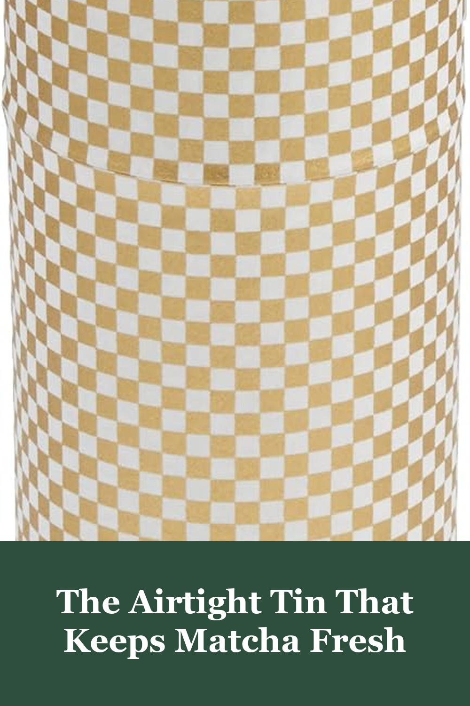
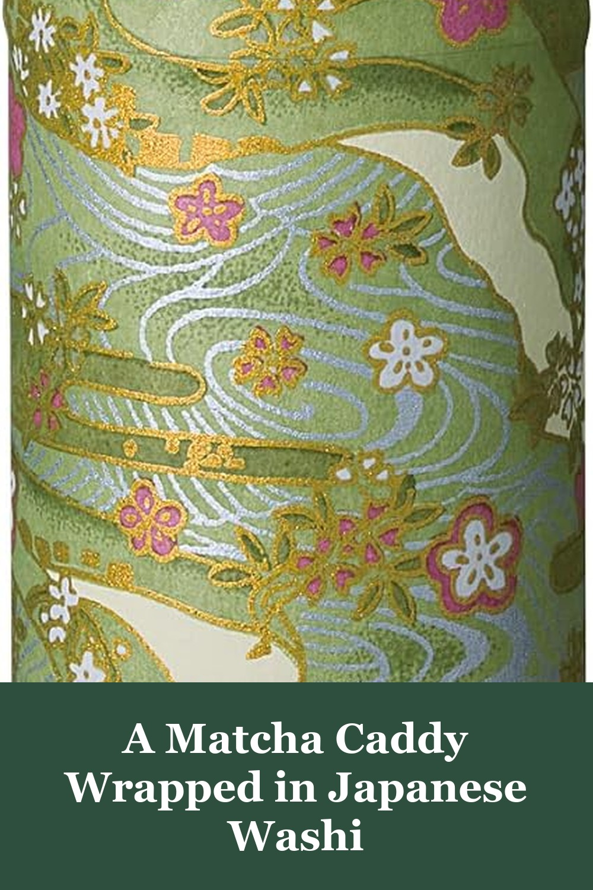
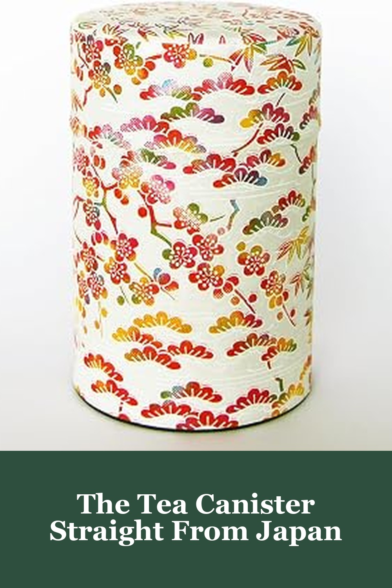

Yamako Pokkan a Japanese Tea Tin Canister, Air Tight, Double Lid, 200g (Ichimatsu Checkered Pattern)
Matcha loses its color and flavor fast once the bag is opened — this double-lidded Japanese tea tin, wrapped in an Ichimatsu checkered washi pattern, keeps it airtight and fresh on your counter instead of stuffed in a drawer.
Keeps my matcha fresh and dry — it's a beautiful canister and I'm glad I got it, reviewers say, though the double-seal lid takes a bit of effort to twist open, which is really the whole point.— verified Amazon buyer
View on Amazon →
Japanese Tea Canister Tin Shikisai (Four Seasons Color), Double Lid, Washi Paper Pasted, 200g
Wrapped in traditional Japanese washi paper and finished with a double lid, this tea canister from Shikisai keeps matcha powder airtight while looking like it belongs on display — reviewers say the green shade matches the tea inside almost too perfectly.
Reviewers say the green color matches their matcha almost perfectly and that the double lid keeps it fresh on the counter — just handle the box gently in shipping, as a couple arrived slightly dented.— verified Amazon buyer
View on Amazon →
Kimikura Japanese Tea Canister [Colorful], 70-100g Capacity, Airtight Tin from Japan
Imported straight from Japan, this small-batch tea canister from Kimikura comes wrapped in a colorful traditional pattern that reviewers say photographs even better in person — sized just right for a 70-100g bag of matcha.
Reviewers call it a gorgeous, well-packed tin that's the perfect size for a bag of matcha — one mentioned the inner lid tab feels a little delicate, so treat it gently.— verified Amazon buyer
View on Amazon →